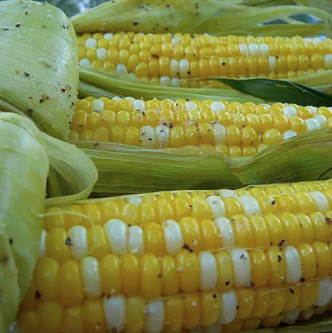

Grilled Corn on the Cob
No summer barbecue is complete without deliciously sweet grilled corn on the cob. This three-ingredient grilled corn on the cob recipe is the perfect method to produce the best tasting corn of your life.
Ingredients
- 6 ears corn
- 6 tablespoons butter, softened
- salt and ground black pepper to taste
Steps
- Preheat an outdoor grill for high heat and lightly oil grate.
- Peel back corn husks and remove silk. Place 1 tablespoon butter, salt and pepper on each piece of corn. Close husks.
- Wrap each ear of corn tightly in aluminum foil.
- Cook on the preheated grill, turning occasionally, until tender, about 30 minutes.